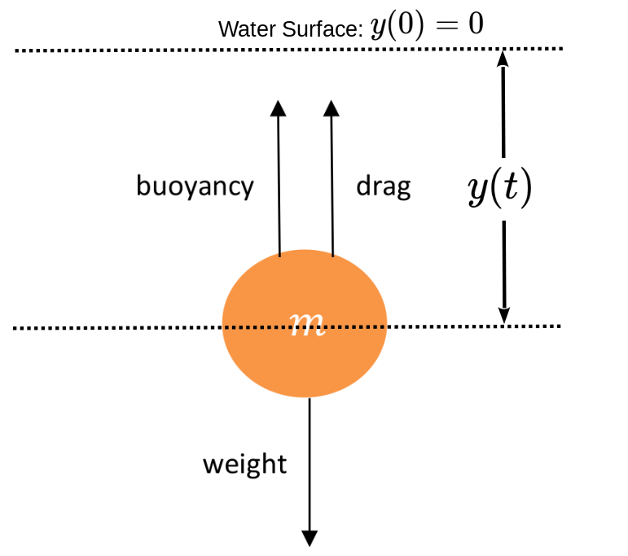
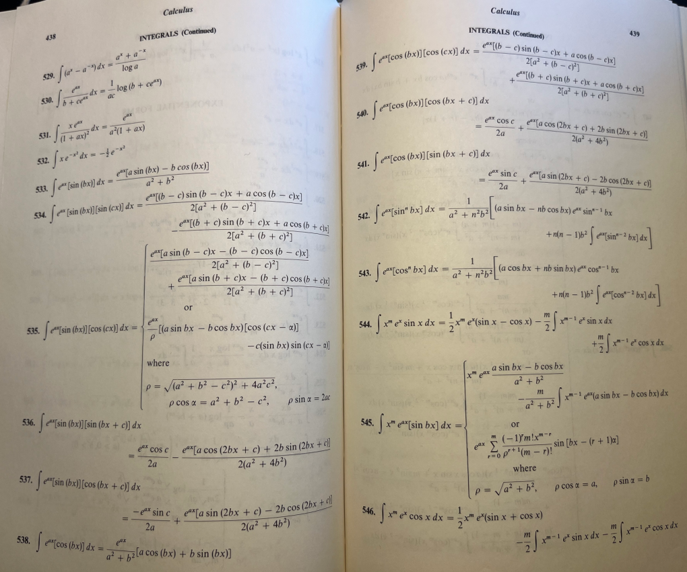

Differential equations have proven to be excellent models for a great may natural phenomena. Unfortunately unless it is very simple, finding the solution to a given differential equation can be they can be very difficult, So, over the years many very ingenious techniques (and tricks) have been employed to reduce a complex differential equation to something more manageable. Very often these tricks and techniques come down to finding a clever substitution which reduces the equation in front of us to one that we already know how to solve. We saw a simple example of this in Drill 19.0.0.1 where \(\int
\cos(5x) \dx{x} \) was reduced to \(\int \cos(y)
\dx{y}\text{.}\) Here is a more substantial example.
Subsection19.1.1Extending Galileo’s Results: Air Resistance
When he began his investigations into falling bodies Galileo kept things simple for himself by ignoring the air resistance. In Section 5.4 we followed Galileo’s example and assumed that the resistance to the motion of a falling body due the Earth’s atmosphere was zero (or at least negligible). But air resistance can have a substantial effect on the motion of a falling body. So we’ll need to tweak our model to account for it.
In general, the faster the body is moving through a fluid (like air or water) the more the fluid tends to resist the motion. You are quite familiar with this. If you hold your hand out of a car window while the car is moving you’ll notice that the faster the car moves, the more force you will feel on your hand. Similarly when you are swimming, the harder you pump your hands and feet through the water the more force you will feel resisting the motion. These are examples of the resistive force or drag, due to the medium an object is moving through.
Some of the variables that affect the resistance of a body moving through a fluid are the velocity of the body, the viscosity of the fluid, the shape and size of the body, and the turbulence of the fluid. But there are many ways that the drag can manifest.
When the object is relatively small and the medium is highly viscous the assumption that the drag is proportional to the velocity of the object makes for a reasonably accurate model. This is called linear drag. An example of this is a grain of sand falling in water.
On the other hand, when the object is relatively large and the viscosity of the medium is relatively low the drag is best modeled by assuming that it is proportional to the square of the velocity of the object. This is called quadratic drag, and would be the model to use for a baseball falling in the air.
Of course to get a really accurate picture, we could use both a linear and a quadratic term to represent the drag, but to keep things as simple as possible for no. we’ll assume that the drag is linear. We can always adjust this later if the need arises.
Example19.1.1.1.Sand Falling in Water.
From the diagram below we see that there are three forces acting on the sand particle falling through water,
the weight of the particle (downward),
the drag that the water imposes on it (upward), and
its buoyancy (upward).

By Newton’s Second Law the total force acting on the grain will be
where \(v\) is the velocity of the grain, and \(t\) is time.
We let \(y(t)\) be the distance the sand has fallen so the positive \(y\) axis is pointing downward and \(y(0)=0\) is the surface of the water.
If, as usual, we denote the acceleration due to gravity by \(g=9.8 \frac{\text{meters}}{\text{second}^2}\) then
\begin{equation*}
\text{weight of the particle } = gm\text{.}
\end{equation*}
We have assumed that the drag is proportional to velocity so
\begin{equation*}
\text{drag on the particle} = -Rv\text{.}
\end{equation*}
Notice that this force is negative as the drag is necessarily in the direction opposite of the motion, so we assume that the parameter \(R\) is some positive constant and \(v\left(=\dfdx{y}{t}\right)\) is the velocity.
The buoyancy of an object is the upward (negative) force that a surrounding fluid applies to any submerged object. This force is equal to the weight of the fluid being displaced by the object. If we denote the mass of the displaced fluid as \(m_w\) then
If we assume that the velocity of the particle at the beginning of its fall is \(v(0)=v_0\) then our model for the motion of a grain of sand falling through water is the IVP
Solving IVP (19.2) will yield a function, \(v(t)\text{,}\) which gives the velocity of the grain as a function of time.
(a)
The differential equation in IVP (19.2) is actually a separable equation, but this may not be readily apparent. To see this more clearly make the substitution \(M=m-m_w\) and show that the differential equation in IVP (19.2) can be re–expressed as
We’ve used \(C\) to represent the integration constant for convenience, but it is not the same as the constant that appeared in equation (19.3). Explain how the two constants are related.
Hint.
This formula looks a little scary, but remember that \(R\) is the proportionality constant for the drag, that \(M=m-m_w\) is the constant from the first substitution, and that \(v_0\) is just the starting velocity, \(v(0)\text{.}\) These are all constants. In fact the only variable in sight it the \(t\) that appears in the exponential.
(d)
Determine the value of the integration constant \(C\) from the initial condition in IVP (19.2), and show that
Compute \(\limit{t}{\infty}{v(t)}\text{,}\) and explain why this value is called the terminal velocity of the sand grain settling in the water. Notice that the terminal velocity is independent of \(v_0\text{.}\) Does this make sense physically? Explain.
Because we developed equation (19.5) in full generality we can find the velocity of any object falling in any fluid simply by varying the parameters \(R\text{,}\)\(m\text{,}\) and \(m_w\text{.}\) Of course this assumes that the assumptions that lead to IVP (19.2) still hold.
Subsection19.1.2Simple Substitutions
As Example 19.1.1.1 shows it can be very helpful We will need to be able to find the antiderivatives of a wide variety of functions. But so far we only know the thirteen listed in Table 18.1.0.4. A significant portion of any course in Integral Calculus is devoted to extending the list of known antiderivatives. We begin that process in this section.
We start by simply extending the rules we already know. For example at first it seems that entry #7 of the table only tells us that an antiderivative of \(\cos(x) \) is \(\sin(x)\text{.}\) But with basic Algebra and a little cleverness we can use it to compute other integrals that are “close to” \(\int
\cos(x)\dx{x}\) as in the following example.
Do all of the algebra necessary to show that equation (19.6) is correct. Explain each step.
When you first encounter it integration by substitution seems to be a fairly simple technique. And it is simple in concept. All we really do is make the formula simpler. That is we make things “easier on the eyes” as we have always done. But in fact substitution is a very sophisticated idea which is used at all levels of mathematics.
As an integration technique it is fundamental. Nearly every integral you do from now on will involve a substitution, either as a first step just to simplify the formulas a bit or later after the other techniques you will be learning have transformed the integral. You’ll see what we mean as we go along. For now just be aware that integration by substitution is fundamental. You need to get as much practice with it as you can.
Drill19.1.2.3.
Emulate the computations in Example 19.1.2.1 to compute each of the integrals. Assume \(a\) is a constant.
where \(a\) is an arbitrary constant. Was your result the same as in part (b)?
(d)
Differentiate the function you found in part (c) to confirm that your solution is correct.
As you saw in Problem 19.1.2.4 integrals can be unpredictable, even when you are computing them correctly. You’ll need to discipline yourself. You will save yourself a great deal of time and frustration if you don’t try to anticipate the solution; don’t say to yourself “Oh, I see. This antiderivative will look like . . . .” Make the first substitution completely. A substitution is only the first step. Once you decide on a substitution follow it through until you have completely transformed the integral into the new variable. Then look at the new integral with “new eyes.” You’re goal is for the new integral to be easier than the old. Ideally, it will be an integral that you simply know from memory. Do not skip steps and write down every computation completely.
Drill19.1.2.5.
For the first four hundred years or so after Calculus was invented it was necessary for scientists, engineers, and mathematicians to memorize a few integrals and to own a table of of known integrals like Table 18.1.0.4, but much larger. The image below is a scan of two pages of such a reference. Notice that the integrals on these pages are numbered 453 through 477. These tables were very large.

Figure19.1.2.6.
Use the entries in the partial table in Figure 19.1.2.6 to evaluate each of the integrals.
\(\displaystyle \int x\inverse\tan\left(\pi x \right) \dx{x}\)
In the modern world the value of a published table of integrals has diminished considerably due to the creation of several very sophisticated mathematical software packages that will perform integrations, sometimes even very complex integrations very quickly. Most such packages are able to compute all of the integrals you will see in this course.
That being so, students are often left wondering why we insist that you memorize the simpler integrals like the ones in Table 18.1.0.4 and learn the basic techniques that allow you to compute more complex integrals.
There are a couple of reasons.
Intuition (or the lack thereof): A similar question can be asked about arithmetic. Was it really necessary for you to learn the arithmetic rules in grade school? After all, any calculuation you need to do now, as an adult, can be done more reliably by posing the question to your phone. Was learning arithmetic a wasted effort?
Suppose that,
you had never learned any arithmetic,
you are planning a road trip of \(2,380\) miles, and
there is no source of fuel on the trip.
If your car gets \(23.8\) miles per gallon of fuel. How much fuel do you need to bring?
Easy right? You ask your phone to compute \(2380/23.8\) and it tells you that you need one hundred gallons of fuel.
But what if you mistyped (or misspoke)? Remember you don’t know how to do this calculation yourself. You must rely completely on your phone for the answer so you can only pray that you posed the the problem correctly, and that the software on your phone correctly interpreted what you typed (or said). Remember that you don’t know how to do the computation yourself so you have no way of knowing whether the computation should yield \(100\) gallons or \(10\) gallons. Indeed, it is very easy to forget the decimal point, or for the listening software on your phone to miss it.
If you hadn’t spent large chucks of your childhood doing these kinds of computations yourself you’d have no intuition to bring to bear on the problem and you’d be unable to see that \(10\) gallons is far too small for you needs.
Mistakes happen. When they do you need to have enough insight into the problem to know when the numbers are coming out wrong. A very good way to develop that kind of insight is to do problems without any assistance (software or otherwise). We made this same point in Section 7.1. Newton’s Method is very good when it works but it doesn’t always work. You must have enough insight into your problem to separate the wheat from the chaff 1
Convenience: Integrals are not stand–alone problems. Except in this course, they will always come to you as part of a larger, more complicated problem. If you are working on such a problem and the expression \(\int xe^x\dx{x}\) comes up you’d like to be able to say that this is equal to \((x-1)e^x+C\) so you can move on to the next step without interupting your work to enter this integral into some software package.
but it certainly is not obvious right now. If we were to ask you to compute this integral today you’d have no choice but to use software. But in fact, this is a fairly simple integral to compute. Once you’ve learned how (in Section 19.3) and practiced a bit you’ll see that it is actually quicker and easier to simply work through it than to search for it on the Internet or to type it into some software in the required format. Perhaps more importantly when you do the computation yourself you will know it is correct. You have no such assurance when using software.
You need to be able to use your tools smoothly and efficiently when you are working, and integration is one of your tools. Having to stop working in the middle of every large computation you encounter in order to enter the smaller computions into software is like having to stop to a small carpentry job to watch a video explaining each step. It can be done, but it will be an onerous task at best.
Software Doesn’t Always Give a Useful Answer: The most sophisticated mathematical software packages available today have the cumulative experience and knowledge of the entire mathematical community built into them . As a result such software will often give answers which, although correct, are not helpful. Especially for a beginner.
which is correct, but what does it mean? If you can’t tell it is probably because you don’t know what \(\erf(x)\) means. You will see the function \(\erf(x) \) again in Problem 21.5.6.27 where we will explain what it means. Until then you have no way to interpret this output.
The same system returned \(x_2\text{F}_1\left(-\frac12,
\frac13; \frac43; x^3\right) \) when fed it the integral
Even we (the authors) needed to do some investigating to figure out what this means as the symbolism is not part of our core knowledge. It turns out that \(\text{F}_1\left(-\frac12,
\frac13; \frac43; x^3\right)\) is a particular Appell hypergeometric function.
Does that help you to understand?
The good news is that we’re just making the point that any software you use will have built in assumptions about your level of expertise. If the assumptions are wrong may not be able to understand the output even when it is correct. Or, worse, you’ll think you understand when you don’t.
The really good news is that for this course don’t need to know what an Appell hypergeometric function is. Possibly you never will.
This is not to say that you should not use these tools at all. Mathematical software is available and it can be a marvelous help. But it is no substitute for the skill, knowledge, and understanding. So use the software to help you learn. Use it to check your computations after you’ve completed them yourself. When you and the software disagree take the time to figure out what is wrong and who is right. This is when the learning takes place.
Example19.1.2.7.
Suppose we need to solve the differential equation
Clearly whoever first computed the value of this integral found it by some other means (possibly by guessing) and then realized that multiplying by \(\frac{\tan (x)+\sec (x)}{\tan(x)+\sec (x)}\) and using the substitution \(u=\tan(x)+\sec(x) \) would suffice, even if it is not very illuminative.
As an means of computing the integral this is fine. But as a teaching example it leaves a lot to be desired. In particular, there is no discernible reason for multiplying the integrand by one in this particular form. It is clearly a trick that was devised after the value of the integral had already been determined.
We have called this a trick, but we can turn it into a technique by finding the underlying structure of the problem. We begin by defining:
can be evaluated using the substitutions in equations (19.8) and (19.9), their properties in equations (19.10) and (19.11) above, and the judicious use of the Pythagorean trigonometric identity
Evaluate the integrals and differentiate your solution to confirm that it is correct.
(a)
\(\int \sec^5(x) \dx{x} \)
(b)
\(\int \tan^3(x) \dx{x} \)
(c)
\(\int \sec^4(x)\tan(x) \dx{x} \)
(d)
\(\int \sec^3(x)\tan^5(x) \dx{x} \)
These substitutions are clever and they give us an elegant solution but we do not necessarily want an elegant solution. In most cases where the evaluation of an integral is required we’ll just want obtain a solution in the most efficient manner possible.
Problem19.1.2.14.
Evaluate the following integrals and differentiate your solution to confirm that it is correct. The method we’ve described in this digression will work, but is not the necessarily always the most efficient method available.
Evaluate the following integrals and differentiate your solution to confirm that it is correct. The method we’ve described in this digression will work, but is not the necessarily always the most efficient method available. (You will need to find substitutions analogous to those we developed above.)
when we were trying to determine the solution to the catenary. We actually have the tools to solve this type of integral once we notice that (surprisingly!) we would like to use the substitution \(z=\tan{z}{}\text{.}\) As strange as it sounds to take a perfectly good integral and purposely insert trigonometry into it, this is just the ticket here. Since we have the trigonometric identity \(\tan^2(\theta)+1=\sec^2(\theta)\text{,}\) then this substitution is just the thing to rid us of the square root, which poses more of an issue than the trigonometry does.
Specifically, if we let \(z=\tan{\theta }\text{,}\) then \(\dx{\theta{}}=\sec^2(\theta)\dx{\theta}\text{,}\) and so we have
The trick now is to put things back in terms of \(z\text{.}\) We have \(\tan(\theta)=z\) , but what about \(\sec(\theta)\text{?}\) We could certainly use the trigonometric identity from before, but a more general way to do this is to draw a triangle. The beauty of this is that we don’t know what the angle \(\theta{}\) is, nor do we really care. All we need is that \(\tan(\theta)=\frac{z}{1}\text{.}\) This leads to the following triangle
Figure19.1.3.1.Diagram of a right triangle.
With this triangle, not only can we obtain the aforementioned \(\tan(\theta)=\frac{z}{1}\) and \(\sec(\theta)=\frac{\sqrt{1+z^2}}{1}\) which is what we need in the problem, but we could also obtain the following if we needed it:
We really urge you to do this (DRAW A TRIANGLE) instead of relying on memorizing trigonometric identities which actually are derived from the triangle. This gives us that the differential equation
Use the formula \(z=\dfdx{y}{x}\) for the catenary and \(z(0)=\dfdx{y}{x}{0}=0\) (this was the low point on the hanging chain) to show that \(c=0\) and so
which is the equation of the catenary as stated earlier.
Consider the top view of an airplane \(P\) starting at the point \((1,0)\) and traveling up the line \(x=1\) at a constant speed \(v\text{.}\) When the plane is at \((1,0)\text{,}\) a homing missile \(M\) is fired from the origin directly at the plane. Assuming that the missile travels at a speed which is \(k\) times the speed of the plane \((k>1)\) and is always aimed directly at the plane, find the path the missile takes. [Such a path is called a pursuit curve.] The diagram below shows the situation at time \(t\text{.}\)
Figure19.1.3.3.Image of a pursuit curve.
Problem19.1.3.4.
(a)
If we let \(s\) denote the distance the missile has traveled at time \(t\text{,}\) show that the missile’s path must satisfy the IVP
Obviously we can solve equation (19.15) for \(y\) but then we would have \(y\) in terms of \(x\text{,}\)\(s\text{,}\) and \(\dfdx{y}{x}\) which isn’t very helpful. The \(s\) term is particularly problematic since we know almost nothing about it.
But only almost. We do know that \(\dx{s}^2=\dx{x}^2+\dx{y}^2\text{.}\)
Differentiate equation (19.15) to show that the missile’s path must satisfy the differential equation
How far has the plane gone when the missile reaches it? What happens as \(x\rightarrow1\text{?}\)
Of course, the tangent function is not the only trigonometric function at our disposal.
Problem19.1.3.5.
The following is the view from above of a tractor–trailer. Initially, the center of the rear axle of the tractor is at the origin and the center of the rear axle of the trailer is at the point \((1,0)\text{.}\)
Figure19.1.3.6.Sketch of a tractor–trailer in the act of turning.
Suppose the tractor pulls the front wheels up the \(u\)–axis and that the rear wheels don’t slip.
(a)
show the path that the center of the rear axle of the trailer follows must satisfy the equations
After you separate the variables substitute \(x=\sin(\theta)\) in your integral.
(c)
Plot your solution on the \(x-y\) plane.
Problem19.1.3.7.
Again, having trigonometry involved was a better option than having the square root. Here, we utilized the trigonometric identity \(\sin^2(\theta)+\cos^2(\theta)=1\text{.}\) A surprising number of integrals involve terms such as \(\sqrt{1-x^2}\text{,}\)\(\sqrt{1+x^2}\) or \(\sqrt{x^2-1}\text{.}\) In these cases, it is often advantageous to utilize a trigonometric substitution, using the identities or to remove the square root, which typically is more a concern than the trigonometry. However, you should remember that there are other techniques at your disposal, so you need to be judicious about what you utilize. For example, consider the integral
Use the trigonometric substitution \(x=\tan(\theta)\) to compute the above integral.
(b)
Now use the non–trigonometric substitution \(x=1+x^2\) to compute the integral
(c)
Which method do you find more appealing? (Or least unappealing?)
Problem19.1.3.8.
This problems asks you to verify Integration Rules (20.15), (20.16), and (20.17), directly.
(a)
Use the substitution \(x=\sin(\theta)\) to compute \(\int\frac{1}{\sqrt{1-x^2}}\dx{x}\text{.}\)
(b)
Use the substitution \(x=\tan(\theta)\) to compute \(\int{\frac{1}{1+x^2}}\dx{x}\text{.}\)
(c)
Use the substitution \(x=\sec(\theta)\) to compute \(\int\frac{1}{x\sqrt{x^2-1}}\dx{x}\)
This is all well and good, but the forms \(\sqrt{1-x^2}\text{,}\)\(\sqrt{1+x^2}\text{,}\) and \(\sqrt{x^2-1}\) are all very specific. Can we use them for an integral like \(\int\frac{1}{\sqrt{4+x^2}}\dx{x} \text{?}\)
Of course we can. We just need to rearrange it using Algebra. Observe that if we had a \(1\) where the \(4\) is we’d be fine. We can’t just change it. That would change the entire integral. But if we factor out the \(4\) we get
Of course, now we have another problem. We have \(\left(\frac{x}{2}\right)^2\) where we were happy to have \(x^2\) before. But since we were going to substitute \(x\) away anyhow we’ll just substitute \(\frac{x}{2}\) away instead.
Letting \(\frac{x}{2}=\tan(\theta)\text{,}\) we proceed as before.
This integral appears to be a completely different from the others in this problem, but it really isn’t. Complete the square on \(x^2-6x\) and then use your result in part (c).
It should be clear from Problem 19.1.3.9 that as long as the expression inside the radical is a quadratic, we can manipulate it algebraically to produce something of the form \(\sqrt{1+\left(\frac{x-b}{a}\right)^2}\text{,}\)\(\sqrt{1-\left(\frac{x-b}{a}\right)^2}\)or \(\sqrt{\left(\frac{x-b}{a}\right)^2-1}\text{.}\) From there, we can use the appropriate trigonometric substitution.
Earlier we computed terminal velocity when considering linear drag. Now we will compare this to terminal velocity when the drag is proportional to the square of the velocity. An example of this would be a ball of mass \(M\) falling in air. (We can include buoyancy again, but it is typically negligible so we will discount it). Again, to model this, let\(y(t)\) be distance the ball has fallen (so the positive \(y\) axis is pointing downward), with \(y(0)=0\) representing the initial position of the ball. In a similar analysis to before, we denote the acceleration due to gravity by \(g\text{,}\) so the weight of the ball is \(Mg\text{.}\) The drag, which we assume is now quadratic, is proportional to the square of the velocity, so we will denote this by \(-Rv^2\text{,}\) where \(R\) is a constant and \(v=\dfdx{v}{t}\) is the velocity. For simplicity, we will assume \(v(0)=0\text{.}\)
Problem19.1.3.10.
(a)
Use Newton’s Second Law of Motion: (\(F\))\(=\)(\(M\))ass\(\cdot{}\)(\(A\))cceleration, to show that the velocity of the ball must satisfy the equations:
Compute \(\limit{t}{\infty}{v}\text{.}\) Compare this terminal velocity with our previous results.
The trigonometric substitutions we’ve dealt with so far have all involved square roots. What about this integral: \(\int\frac{\dx{x}}{(1-x^2)^\frac32}\text{?}\) Do you see that this is only slightly more complicated?
If we make the substitution \(x=\sin(\theta)\text{,}\) then \(\dx{x}=\cos(\theta)\) as before so,
This example underscores the need to be able to compute a variety of integrals involving trigonometric functions. Again, it is a trial and error kind of thing, but there are some standard tricks to learn. It is probably best to learn these tricks by looking at some specific examples, but as you do, focus on the technique being used and how it can be used on similar integrals, not the specific example.
Since sine is raised to an odd power, it makes sense to “save one of the sines” and convert everything else to cosine, utilizing the Pythagorean identity \(\sin^2(\theta)=1-\cos^2(\theta)\text{,}\) and then apply a substitution as follows. First we “save a sine.”
It’s just that it is not immediately clear how to continue from here. Most people will shy away from this because of the square root but in fact, this integral can be computed using techniques you already know.
First, the elementary substitution \(x=\sin(\theta)\) will give:
You see why we wouldn’t want to go this route, right? Recall that we introduced trigonometric substitutions precisely so we could handle integrals like this last one. It would seem to be counterproductive to take this path since we started with an integral involving trigonometric functions.
While our goal is to be able to work out integrals by the simplest possible method, not the most difficult, it can instructive to see that a computation can be done in more than one manner so we will pursue this just a bit farther.
Problem19.1.3.16.
Compute the integral \(\int x^3\sqrt{1-x^2}\dx{x}\) using these substitutions:
(a)
\(x=\sin(\theta)\)
(b)
\(u=1-x^2\)
Finish example 19.1.3.13 using each of the substitutions above. Do you get the same solution as before?
Problem19.1.3.17.
Compute the integral \(\int\sin^3(\theta)\cos^3(\theta)\dx{\theta}\) by:
(a)
Saving one of the cosines and converting everthing else into sines.
(b)
Saving one of the sines and converting everthing else into cosines.
(c)
Do you get the same result in parts (a) and (b)? Explain.
Example19.1.3.18.
What happens if you don’t have an odd power of sine or cosine? For example, suppose you have \(\int\sin^2(\theta)\cos^2(\theta)\dx{\theta}\text{.}\)
Saving a sine or cosine would lead to an integrand with a square root, which we are trying to avoid, if we can help it. In this case, there are a couple of trigonometric identities that can help. They the Half-Angle formlas:
\begin{equation*}
\sin^2(\theta) = \frac12\left(1-\cos(2\theta)\right) \text{
and } \cos^2(\theta)=\frac12\left(1+\cos(2\theta)\right)\text{.}
\end{equation*}
Using these identities in our integral we see that
Show that we get the same result if we use the Double Angle formula: \(\sin(2\theta)=2\sin(\theta)\cos(\theta)\text{.}\)
Example19.1.3.20.
\(\int\sec^4(\theta)\tan^2(\theta)\dx{\theta}\)
In this example, we can save a \(\sec^2(\theta)\) as part of the differential and use the identity \(\sec^2(\theta)=1+\tan^2(\theta)\) to change everything else into an expression in tangent. Since the secant is to an even power this again avoids square roots, which is the general idea.
If tangent occurs to an odd power, we can save a tangent and a secant as part of the differential and use the same identity to convert everything else to secant.
Compute this integral by saving a \(\sec^2(\theta)\) and converting the rest into an expression in tangent.
(b)
Compute this integral by saving a \(\sec(\theta)\tan(\theta)\) and converting the rest into an expression in secant.
(c)
Verify the at you get the same result in (a) and (b).
Problem19.1.3.23.
Previously we computed \(\int \tan(\theta)\dx{\theta}\) using the identity \(\tan(\theta)=\frac{\cos(\theta)}{\sin(\theta)}\text{.}\) We could also use the identity \(\tan(\theta)=\frac{\sec(\theta)\tan(\theta)}{\sec(\theta)}\dx{\theta}\text{.}\)
Do we get a different answer? Explain.
The same tricks we applied with secant and tangent would apply equally well to integrals involving cosecant and cotangent using the identity \(\csc^2(\theta)=1+\cot^2(\theta)\text{.}\) Of course, we have not covered every type of integral that can occur and you can always find integrals that will take other tricks. We’ve only provided some basics that you can build on as you gain experience. So practice, practice, practice!